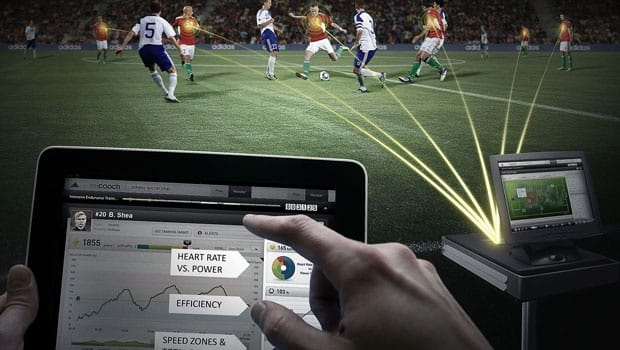

Soccer technology has made vest become an important part of soccer over the past years. Many people think soccer players wear bras but they are actually wearing technological vests. Soccer players wear vests during games and training.(Velasco) In the past years, soccer vests have been a big part in soccer training and in games. The vest has small gps pods that sit between the shoulder blades. It is the safest spot to put on a GPS tracker while playing in an official match. The vest captures over 1250 data per second.(Velasco) It captures the speed of a player, the total distance they run, and the power of their shots.(Velasco) With the vest that they wear, it captures all their movements, and will be able to see what they will need to improve on. In a game, the average player runs between 6 to 8.5 miles per game. If the player runs less than they will need to improve their running or stamina.
Technology is used in strength training more easily than before with the new technology. With the new technology the player will know how to work out the body part the player is trying to work out. Strength training is important because it decreases the chance of players getting injured. The weaker the player is, the higher chance of them getting injured. If a soccer player has a serious injury they will be out for a long time. Having strength will make the soccer player have more powerful shots and it won’t be easy to body you in a one on one.. The stronger the player is, the harder it will be for them to get stopped. To build up strength, the player won’t need to lift heavy weights, just by doing simple bodyweight training they will build strength.(Asral)